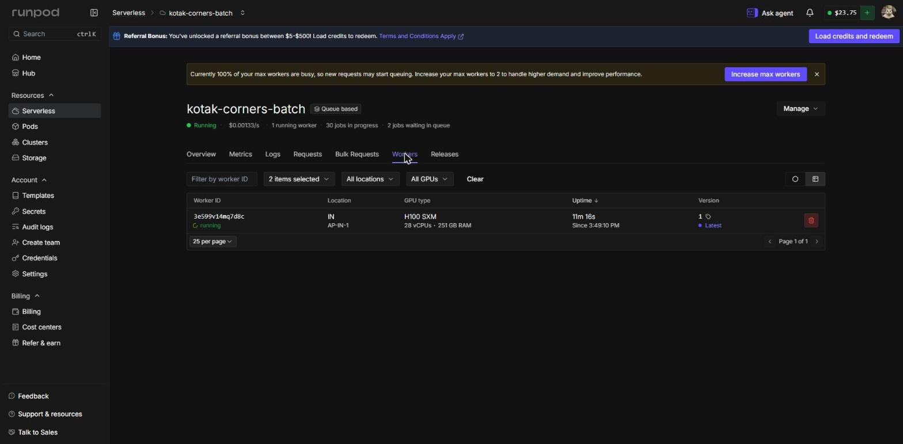
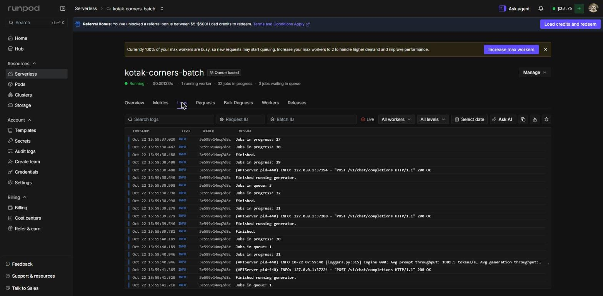
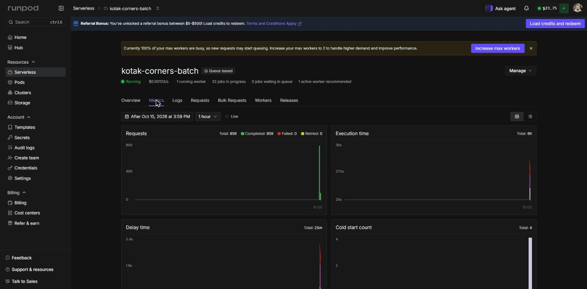

05Worker imagerunpod/worker-v1-vllm:v2.28.0 (vLLM v0.30.0, CUDA 13.0), the stock RunPod vLLM worker
06ModelQwen/Qwen3.8-27B-FP8, open weights under Apache 2.0
07GPU1 × NVIDIA H100 80GB HBM3 (H100 SXM), data centre AP-IN-1; pools 80 GB PRO and 80 GB; max 1 worker
08Runtime1,285 s in total: smoke run 502 s (with cold start), full run 783 s
09Volume930 requests, 0 HTTP errors, 7 answers rejected by the validator and regenerated, 0 roles failed
10Tokens1,092,522 prompt, 1,137,450 completion
11CostAbout US$1.25: account balance US$25.00 before, US$23.75 after (RunPod console, Billing page, 22 Oct 2026
16:05 MYT)
02
Handbook checklist
Participant Handbook sections 10.7 and 9.4
[x]Endpoint URL, in place of a Pod ID10.7: a Serverless team shows its endpoint URL. The endpoint ID and the
api.runpod.ai/v2/5yjk19uqmrpbp7 URL both appear on the endpoint page.Fig 1 12
[x]GPU typeThe endpoint's GPU pools (80 GB Pro, 80 GB), and the H100 SXM the worker actually ran on.Fig 1 1 · Fig 2 2
[x]RuntimeThe worker's uptime mid-run (11 m 16 s) and the endpoint's execution time. The run record gives the exact
total: 1,285 s.Fig 2 3 · Fig 4 2
[x]The team's own accountEvery figure is the same signed-in console, with the account's balance and avatar top right.Fig 1 5 · all figures
[x]GPU work runs on RunPod9.4: this batch is Kotak's only GPU work. No model is fine-tuned or self-trained, and the live app calls
the Claude and ElevenLabs APIs instead of running a model.Section 03, Workload
RunPod Proof of UseKotak · Team T010NG · SDC Hackathon 2026, Domain 103 / 06
Kotak turns any job into six skill corners and asks twelve yes/no questions about them. RunPod generates that
content once, ahead of time, for every one of the 923 O*NET occupations. There is no custom handler: the stock
RunPod vLLM worker serves the model. This is Kotak's only GPU work: the live app calls the Claude and ElevenLabs
APIs (Technical Declaration, sections 3 and 4).
01InputThe job's title, description and O*NET tasks, grouped by work activity into at most six groups by fixed
rules, with no AI.
02AskThe model groups the tasks into six named corners and writes three can-do statements per corner (basic,
working, advanced), with learning hours, SDG targets and search-link resources.
03ConstrainA strict JSON schema goes in response_format; vLLM's structured outputs make every token
follow it.
04CheckA validator rejects any answer that drops a task, puts a task in two corners or cites a task the job does
not have.
05RetryA rejected answer goes back to the model with its errors. Seven were regenerated; none failed.
06Writedata/generated/role-corners.json feeds the check-up questions, the Future Skills Radar and the
roadmap; role-corners-run.json records every run.
# smoke run on the three demo roles, then the full run; it skips jobs already done
bun run batch:corners --codes 15-1254.00,15-1255.00,43-3031.00
bun run batch:corners
RunPod Proof of UseKotak · Team T010NG · SDC Hackathon 2026, Domain 104 / 06
05
Console figures
Captured during the full run, 22 Oct 2026, about 16:00 MYT
FIG 1
Endpoint overview
16:00 MYT
1Endpoint ID 5yjk19uqmrpbp7, the worker image and the GPU pools: 80 GB Pro, 80 GB.
2The endpoint URL, in RunPod's own cURL example.
3Running, with 1 worker and 31 jobs in progress.
4800 requests completed in the past hour.
5The account's balance, US$23.75, and avatar.
FIG 2
Workers tab
during the full run

1Worker 3e599v14mq7d8c, running in AP-IN-1.
2GPU type: H100 SXM, 28 vCPUs, 251 GB RAM.
3Uptime 11 m 16 s, since 3:49:10 PM.
RunPod Proof of UseKotak · Team T010NG · SDC Hackathon 2026, Domain 105 / 06
FIG 3
Logs tab
15:59 MYT

1vLLM serving POST /v1/chat/completions with 200 OK.
2The engine's average prompt throughput, 1,881.5 tokens/s.
3Every line comes from worker 3e599v14mq7d8c.
About 30 jobs are in progress at once: the runner sends 32 requests in parallel.
FIG 4
Metrics tab
at capture time

1859 requests completed, 0 failed, 0 retried.
2Execution time, 6 h summed over parallel jobs.
34 cold starts across both runs.
The filter starts on 15 Oct, so the totals cover both runs; the bars sit at 16:00 on 22 Oct.
RunPod Proof of UseKotak · Team T010NG · SDC Hackathon 2026, Domain 106 / 06
 kotak
SDC Hackathon 2026
Domain 1
Team T010NG
Batch run 22 Oct 2026
kotak
SDC Hackathon 2026
Domain 1
Team T010NG
Batch run 22 Oct 2026